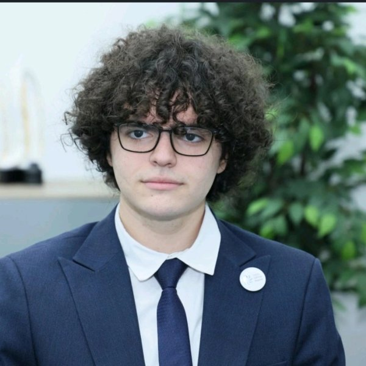

Building
UC Berkeley, College of Chemistry
B.S. in Chemical Engineering with an official EECS minor. I started in Fall 2026 and expect to graduate in May 2030. Outside class I build startups, hackathon projects, and websites for small businesses.
Building in Berkeley
I'm a first-year Chemical Engineering student at UC Berkeley with an EECS minor. I build things where chemical engineering, EECS, and startups meet.
See my studio demos ↓
Murad Gasimov (Murad Qasımov)
EJICK · Baku → Berkeley
// now
Building
B.S. in Chemical Engineering with an official EECS minor. I started in Fall 2026 and expect to graduate in May 2030. Outside class I build startups, hackathon projects, and websites for small businesses.
Research I'm looking for
On campus
// selected work
01 · Co-founder · CTO/COO
AI smart glasses for visually impaired people. A custom YOLO model runs offline on a Raspberry Pi 4B and detects traffic lights and crosswalks. I co-founded it with Omar Eyvazli, who is CEO/CPO.
One of them is the IT category of "100 Ideas for the CIS".
02 · Co-founder · CTO
A platform for founders and investors, formerly called InveStory, which I co-founded with Omar Eyvazli (CEO): video pitches, data rooms, and small-ticket investing. We took 2nd at Automation & AI Hackathon Baku 2026. I was the first high-school student accepted to SABAH.HUB, and the team got a VC offer after Demo Day.
Visit PitchRiser ↗03 · Berkeley · 4th place
An AutoCAD plugin that automates ship pipe routing, built for Fincantieri's challenge at the Maritime Dual-Use Hackathon. It takes in the constraints, finds 3D paths, checks gravity and pressure, draws the result in AutoCAD, and exports a spreadsheet. Built with Efe Gokturk, Krishna Challapalli, and Hasan Onallah.
// studio
Client work · demos
I design websites for small businesses, mostly in Azerbaijan and Kazakhstan and selectively in Europe. Each demo is labeled as a proposed redesign. None of them is the official site of the business.
Open the studio ↗Baku · proposed redesign
Rooms, sample rates, and a booking request flow, rebuilt mobile-first for a hotel in Baku.
See the demo ↗Almaty · proposed redesign
Mountain routes with grades and pace for a tour operator in Almaty, rebuilt around the trips themselves.
See the demo ↗Baku · showcase only
A program page for a kids' science education franchise. Showcase piece only.
See the demo ↗Baku · proposed redesign
Menu, coffee picks, and an order ticket, with the menu built from a Postgres data snapshot.
See the demo ↗// before berkeley
Baku, Azerbaijan
I grew up in Baku and graduated from Zarifa Aliyeva Lyceum with a Gold Medal. While I was there I started the school's debate, cybersecurity, and basketball teams. I also headed the Child Affairs Department of Azerbaijan's Child Ambassadors Council, a national volunteer network of about 13,000 people, and I was a Young European Ambassador with EU Neighbours East.
Python · machine learning · computer vision (YOLO) · PyTorch · TensorFlow · Git · Arduino · Raspberry Pi · PCB design · Unity · 3D modeling